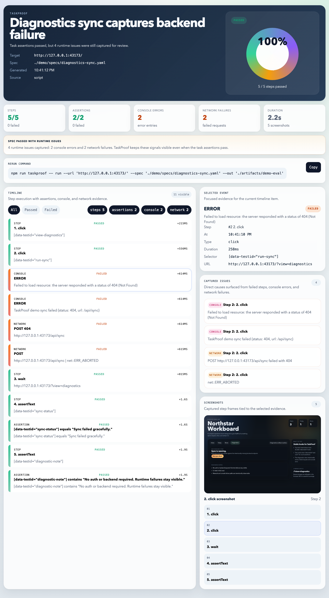
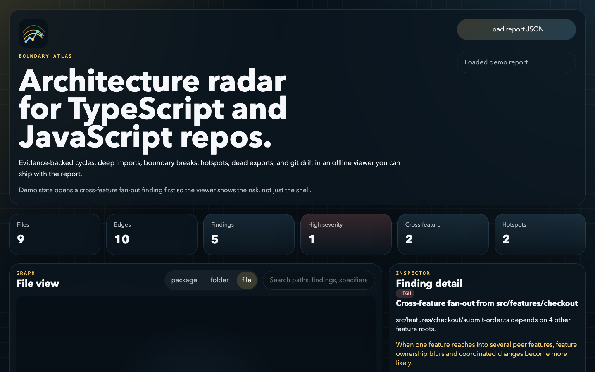
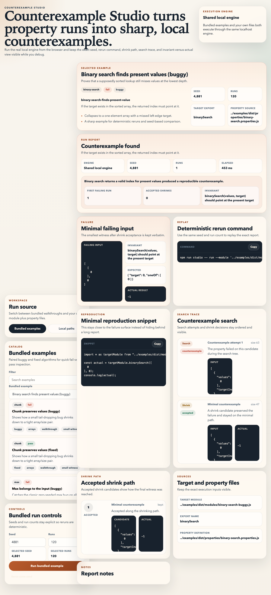
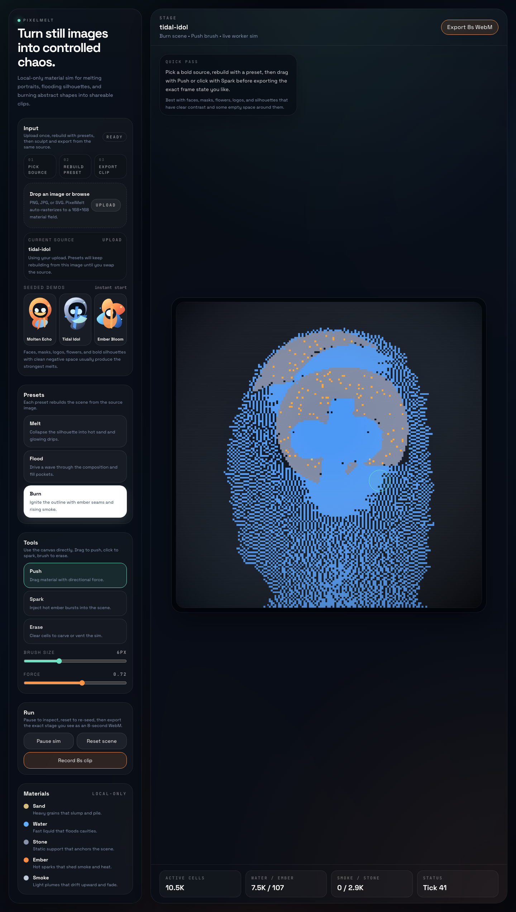

mentor-worker-benchmark
AI-assisted experiment / Python
Mentor-worker benchmark
An AI-assisted benchmark experiment around whether a mentor LLM can improve a worker model on deterministic coding tasks.
Nicholas Dunzelman
I use AI heavily to make experimental tools, strange interfaces, and fast product-like prototypes. The value here is not deep domain expertise in every repo. It is taste, iteration speed, packaging, and turning rough ideas into demos that are easy to inspect.
Curated set of experiments with real docs, tests, and proof assets.
Most useful surfaces are public. Archive clutter is separated.
Prototype fast, keep the best ideas, and polish the presentation hard.
Artifacts, screenshots, reruns, and visible behavior matter more than claims.
Selected Work
AI-assisted experiment / Python
An AI-assisted benchmark experiment around whether a mentor LLM can improve a worker model on deterministic coding tasks.

AI-assisted prototype / TypeScript
An AI-assisted browser proof prototype that turns a task spec into inspectable evidence bundles and static reports.

AI-assisted analysis experiment / TypeScript
An AI-assisted experiment in TS and JS architecture analysis with findings, drift checks, and offline HTML reports.

AI-assisted testing experiment / TypeScript
An AI-assisted experiment in making property-based counterexamples, shrink traces, and reruns easier to inspect.

AI-assisted creative prototype / TypeScript
An AI-assisted browser prototype that turns one image into a live falling-material simulation and exportable WebM clip.
AI-assisted CLI experiment / Python
An AI-assisted CLI experiment for reproducible local-LLM evals over any OpenAI-compatible API.
Other Public Work
AI-assisted full-stack prototype for text generation, summaries, titles, and keyword extraction.
Open repoAI-assisted local prototype for explaining clinical PDFs with OCR fallback, lab parsing, and FHIR export.
Open repoAI-assisted campus transit prototype for live trolley positions, stop ETAs, rider alerts, and schedule fallback.
Open repoHow To Read This
I use AI heavily for coding, iteration, and exploration. What is actually mine here is choosing ideas, steering the shape, testing what matters, and polishing the result.
Most repos are experiments or tool concepts pushed far enough to become believable demos. They should not be read as proof that I have deep experience in every domain they touch.
The throughline is fast iteration, sharper demos, cleaner docs, and making weird ideas legible enough that someone can actually try them.
Benchmark
An AI-assisted benchmark experiment around a question I found interesting: whether a mentor LLM can improve a worker model on objective coding tasks. The real signal is the artifact trail, not any claim that I am a benchmark researcher.
Browser Proof
An AI-assisted prototype for turning a browser task spec into screenshots, DOM captures, network evidence, console logs, and a shareable static report. It is a good example of how I shape an idea into a clean demo surface.
Static Analysis
An AI-assisted architecture-analysis experiment for TypeScript and JavaScript repos. I would not present this as evidence that I am an architecture expert. I would present it as evidence that I can turn an analysis idea into a polished tool-shaped prototype.
Testing UX
An AI-assisted experiment focused on the part of property-based testing that usually feels opaque: the minimal failing witness, the shrink path, and the exact rerun command that gets you back there.
Creative Tool
A more playful AI-assisted prototype: turn one image into a live material simulation, then export a short clip directly from the browser. This is here because it shows experimentation and taste, not because it proves graphics expertise.
CLI Utility
A narrow AI-assisted CLI experiment for sanity-checking a local model server, saving artifacts, and keeping a small eval history while swapping prompts, models, or serving stacks.